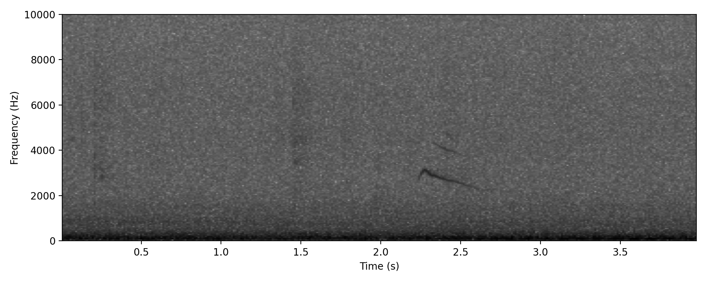
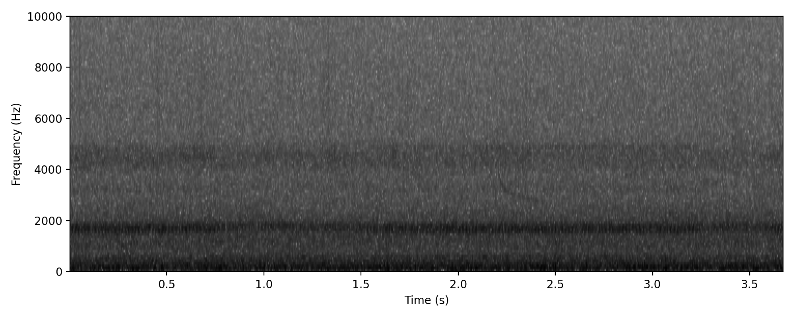
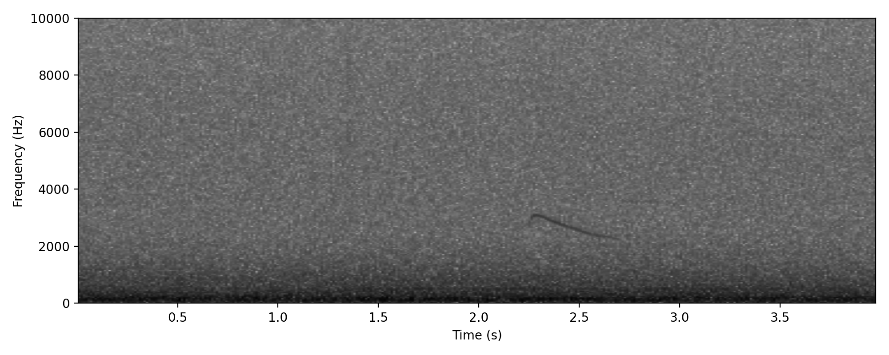

Chalcites lucidus
Single, pure-sounding downward slurring whistle, starting at 4kHz and finishing on 2kHz.
Matches spectrograms of this call, which is also given in the daytime, although still need to make comparison figure.
High confidence since this is a well-known vocalisation.
Some care needed to separate from Horsfield's Bronze-cuckoo.
Typical single downward slurring call note. Featured

Very faint example.

